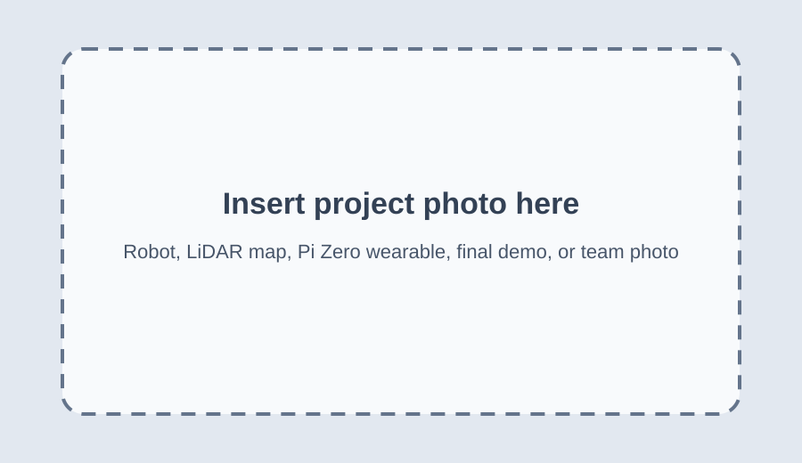

Motivation and Scope
Introduction
Indoor navigation is still difficult for people with visual impairments because GPS is unreliable indoors and many existing assistive systems either require expensive infrastructure or do not provide clear path-level guidance. Our project explored a low-cost prototype that combines a mobile robot, LiDAR-based mapping, audio feedback, and wearable step tracking. The idea is that the robot can act as a moving audio beacon through a room or hallway, while the wearable estimates whether the person is following the intended route.
The original goal was full autonomous navigation and full person localization on top of a generated map. As the project developed, we shifted the final system toward a more reliable demonstration: the robot is manually controlled for safety and repeatability, but it still uses LiDAR and SLAM to map the environment. After mapping, we export a planned path as a CSV file. A Pi Zero 2 W worn by the user runs BNO055-based pedestrian dead reckoning and sends live coordinates over Wi-Fi to the Pi 4. The Pi 4 overlays the live person track on the planned path and activates a buzzer if the person deviates too far.

Figure 1. Overall system architecture. The robot maps and provides the audible cue, while the wearable subsystem tracks the person's motion and sends data to the Pi 4.
High Level Summary
Project Objective
Our objective was to demonstrate a low-cost assistive navigation prototype that links robot-based environmental sensing with wearable human motion tracking. The final system maps a room with a LiDAR-equipped robot, exports a planned route from the mapping software, receives live PDR coordinates from a Pi Zero wearable, and plots the planned path and person path on the same coordinate system. If the person deviates too far from the planned path, the robot-mounted buzzer gives an audible warning. This final version focuses on robust integration of sensing, communication, plotting, and feedback instead of fully autonomous robot movement.
Map
Use the robot's LiDAR and ROS 2 mapping stack to build a 2D representation of the room.
Track
Use a vertical BNO055 IMU on a Pi Zero wearable to estimate user steps, direction, and position.
Warn
Compare the user's live path against the planned path and sound a buzzer if deviation exceeds a chosen threshold.
Demonstration
Project Video
This placeholder uses the required course video link. Replace it with the final class YouTube link after the instructional team uploads the final demo video.
Video 1. Final demonstration placeholder. The final video should show manual robot mapping, path export, live PDR data reception, overlay plotting, and buzzer warning.
System Design
Design and Implementation
Final System Workflow

Figure 2. Final workflow used for the integrated demo.
The final design separates the system into two cooperating computers. The Raspberry Pi 4 is mounted on the robot and handles LiDAR, ROS 2, SLAM, manual driving support, planned path export, plotting, and buzzer feedback. The Raspberry Pi Zero 2 W is worn by the user and reads the BNO055 IMU. The Pi Zero estimates steps and direction using a PDR algorithm, then exposes the current tracking state over a Wi-Fi HTTP endpoint. The Pi 4 polls that endpoint and saves a final plot showing the planned path and the person path together.
Robot Mapping Subsystem
The robot uses a SLAMTEC/SLLIDAR sensor and ROS 2 nodes to publish scan data, visualize the scan in RViz2, and build a 2D map using SLAM Toolbox. For the final demo, robot movement is manual/RC-controlled to make the mapping repeatable and safe.
- Pi 4 runs ROS 2 Jazzy.
- SLLIDAR node publishes scan data.
- SLAM Toolbox builds the room map.
- Planned path is exported to a CSV file.
Wearable Tracking Subsystem
The Pi Zero 2 W reads the BNO055 over I2C. The final PDR script uses the IMU quaternion, accounts for vertical body mounting with a chosen body-forward axis, detects steps using acceleration magnitude, and locks heading into cardinal directions to reduce drift.
- Fixed step length of 0.61 m, about 2 ft.
- Cardinal directions N, E, S, W.
- Wi-Fi server exposes live x, y, steps, and direction.
- Final CSV and debug plots are saved after the run.
Path Overlay and Deviation Warning
After the planned path is exported, the Pi 4 script loads the CSV and polls the Pi Zero for live person coordinates. The live PDR points are transformed as needed with simple rotation, scale, and offset settings, then plotted with the planned path. A deviation threshold can be applied by computing the nearest distance from the person point to the planned path. If the distance is above the threshold, the robot buzzer activates to warn the user that they are no longer following the intended route.

Figure 3. Final plot showing our robot's planned path, and the overlay for the person's path.
Major Design Iterations
- Initial concept: autonomous LiDAR robot maps a room and a wearable module localizes the person directly on that map.
- IMU development: double integration was tested first but drifted too quickly. We then switched to step-based PDR.
- PDR tuning: the BNO055 was mounted vertically, so the heading calculation was rewritten to use a body-forward sensor axis instead of assuming a flat IMU.
- Communication: Wi-Fi HTTP communication was selected over Bluetooth because it was easier to test between the Pi Zero and Pi 4.
- Final integration: robot driving was made manual for reliability, while LiDAR mapping, path export, wearable tracking, Wi-Fi communication, plotting, and buzzer feedback remained integrated.
Validation
Testing and Debugging
LiDAR and Mapping Tests
We tested whether the LiDAR published scan data, whether RViz2 displayed scans and map features correctly, and whether SLAM Toolbox could build a room-scale map. We also debugged frame orientation issues between laser and base_link, including cases where the scan appeared flipped relative to the robot.
- Verified
/scanpublishing from SLLIDAR. - Verified ROS 2 node startup through the run script.
- Added build/debug timestamp checks to avoid running stale installed files.
- Used RViz2 markers to check FOV bounds, target direction, and scan alignment.
PDR and Wi-Fi Tests
The BNO055 tracking algorithm was tested by walking short straight-line and right-angle paths while plotting acceleration, step signal, heading, and estimated XY position. Wi-Fi communication was tested by having the Pi 4 repeatedly poll the Pi Zero /position endpoint.
- Added rolling average and baseline removal to reduce false step detections.
- Changed to cardinal direction locking when continuous heading was too noisy.
- Mounted IMU vertically and computed heading from a selected body-forward axis.
- Used HTTP JSON packets for live
x,y,steps_total, anddirection.
Challenges and Resolutions
| Challenge | What happened | Resolution |
|---|---|---|
| Autonomous driving reliability | The robot sometimes chose unstable paths or the scan frame did not match the physical robot orientation. | For the final demo, movement was made manual/RC-controlled while preserving LiDAR mapping and data integration. |
| IMU drift | Double integration drifted badly even when the sensor was stationary. | Switched to step-based PDR with fixed step length and direction locking. |
| Heading instability | Continuous heading caused diagonal drift and direction flicker. | Quantized heading into N, E, S, W and added hysteresis before switching directions. |
| Vertical IMU mount | Plain yaw was not always the person's facing direction. | Computed heading from the sensor axis mounted forward on the body. |
| File/build confusion | ROS sometimes ran older installed files. | Added build timestamp debug and hot-reload steps to the robot launcher. |
Evaluation
Results
The final prototype met the core integration goals. We were able to run the robot mapping stack, export or use a planned path CSV, run PDR tracking on the Pi Zero, send live tracking data over Wi-Fi to the Pi 4, and save a combined plot of the planned path and person path. The buzzer feedback mechanism provides a simple way to alert the person if their tracked path deviates too far from the intended route.
- Completed: LiDAR mapping pipeline on the robot.
- Completed: manual/RC robot movement for reliable mapping and demonstration.
- Completed: BNO055-based PDR script with vertical mount support and cardinal heading locking.
- Completed: Wi-Fi data connection between Pi Zero wearable and Pi 4 plotting script.
- Completed: planned path and live person path overlay plot saved as an image.
- Partially completed: autonomous robot pathfinding. The robot can calculate and visualize path information, but final movement was manually controlled for reliability.

Figure 4. Replace with final generated plot, RViz2 map screenshot, or demo photo.
Takeaways
Conclusions
The strongest part of the project was the integration across several subsystems. The robot side and person side communicate over Wi-Fi, and the final plot connects the path planned from mapping with the person's live motion estimate. The PDR subsystem also improved significantly over the project. Moving from double integration to step detection made the tracking much more usable, and the cardinal direction lock made the final path easier to interpret.
The main limitation is that the final robot movement is not fully autonomous. The LiDAR and ROS stack were useful for mapping, but stable autonomous driving required more tuning than the project timeline allowed. Another limitation is that PDR still accumulates error over time. The final system is therefore best viewed as a proof-of-concept for assistive guidance and monitoring rather than a finished navigation product.
Next Steps
Future Work
- Autonomous navigation: improve gap selection, obstacle inflation, and motor calibration so the robot can follow the planned path without manual control.
- Better coordinate alignment: add a calibration step to align the Pi Zero PDR coordinate frame to the SLAM map frame.
- Drift correction: periodically correct the wearable PDR estimate using map constraints, visual landmarks, UWB, BLE beacons, or known checkpoints.
- Real-time web dashboard: replace the saved image workflow with a live browser dashboard showing map, planned path, and person path.
- User feedback: test different buzzer patterns for warning, confirmation, and directional guidance.
- Safety design: add a physical emergency stop and more conservative obstacle thresholds before testing with users.
Figures and Media
Figures, Drawings, and Supporting Media
Figure 5. Insert photo of the robot showing the LiDAR, Pi 4, chassis, buzzer, and power setup.
Figure 6. Insert photo of the Pi Zero wearable and BNO055 vertical mounting orientation.
Figure 7. Insert RViz2 screenshot showing LiDAR scan, generated map, or path markers.
Figure 8. Insert final team photo.
Bill of Materials
Parts List
| Part | Quantity | Approx. unit cost | Approx. total | Role |
|---|---|---|---|---|
| Raspberry Pi Zero 2 W | 1 | $15 | $15 | Wearable PDR tracking and Wi-Fi server |
| BNO055 IMU breakout | 1 | $35 | $35 | Wearable orientation and acceleration sensing |
| SLAMTEC/SLLIDAR sensor | 1 | $100 | $60 | 2D room mapping and obstacle sensing |
| Piezo buzzer | 1 | $2 | $2 | Audible warning or follow cue |
| Estimated Total | $112 | Actual cost depends on parts already available in lab. | ||
Costs are approximate and should be updated with the actual purchase/lab inventory values before submission.
Sources
References
- ROS 2 Jazzy documentation.
- ROS 2 nodes and topics tutorial.
- SLAM Toolbox GitHub repository.
- SLAMTEC SLLIDAR ROS 2 package.
- Adafruit BNO055 Absolute Orientation Sensor Guide.
- Matplotlib documentation.
- Raspberry Pi documentation.
- ECE 5725 course materials, labs, and final project report guidelines.
- OpenAI ChatGPT, GPT-5.5 Thinking, used for debugging support, explanation drafts, and code organization assistance. Final design decisions and testing were completed by the project team.
Appendix
Code Appendix
Place the final source files in the code/ folder before submission. The table below lists the intended code files and their purpose. Add direct code listings or repository links if required by the course staff.
| File | Purpose |
|---|---|
| run_robot.py | Starts ROS 2, LiDAR, SLAM, motor interface, and robot control processes. Includes manual mode and build/debug helpers. |
| reactive_nav.py | Reactive navigation and RViz2 marker publishing. Include final version if autonomous/visual path logic is used. |
| motor_interface.py | Receives /cmd_vel and drives the motor driver pins. |
| pi_zero_pdr_wifi.py | Runs BNO055 PDR tracking and serves live coordinates over Wi-Fi to the Pi 4. |
| pi4_plot_person_tracking.py | Loads planned path CSV, polls the Pi Zero, overlays person tracking, and saves final plot. |
| buzzer_test_gpio4.py | Tests robot-mounted buzzer on GPIO 4. |
| robot_debug.py | Displays live debugging information for LiDAR, velocity commands, and motor PWM estimates. |
Representative Code Snippet
# Pi Zero live tracking packet served to the Pi 4
live_state = {
"x": round(float(x), 4),
"y": round(float(y), 4),
"steps_total": int(steps_total),
"direction": str(accepted_heading_dir),
"moving": bool(moving),
"t": round(float(elapsed), 3),
}
# Pi 4 receives this packet and plots it against planned_path.csv
# If nearest distance to the planned path is above the threshold,
# the robot-mounted buzzer is activated.Work Distribution
Team Contributions
Kaelem Bent, kab472
Led the wearable tracking and communication subsystem. Developed and tuned the BNO055 PDR algorithm, tested double integration and step detection approaches, added cardinal direction locking, configured Pi Zero Wi-Fi communication, and worked on integration with the final plotting and buzzer feedback workflow.
Nate Haris, nh428
Led the LiDAR and mapping subsystem. Configured the LiDAR on the Raspberry Pi 4, worked with ROS 2, RViz2, scan matching, and SLAM Toolbox, debugged mapping performance and scan visualization, and supported robot-side integration with the planned path workflow.
Figure 9. Insert team photo here.